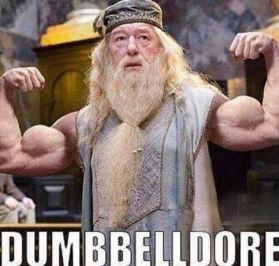

Tipos de ejercicios
En español se denomina fitness también a la práctica deportiva consistente
en realizar ejercicio para ponerse o mantenerse en buena forma.
A continuacion se veran dos imagenes

SI PASAS MAS DE 3 DIAS DE GYM CONTINUO ES UN NUEVO LOGRO DEBLOQUEADO
De mi, para mi